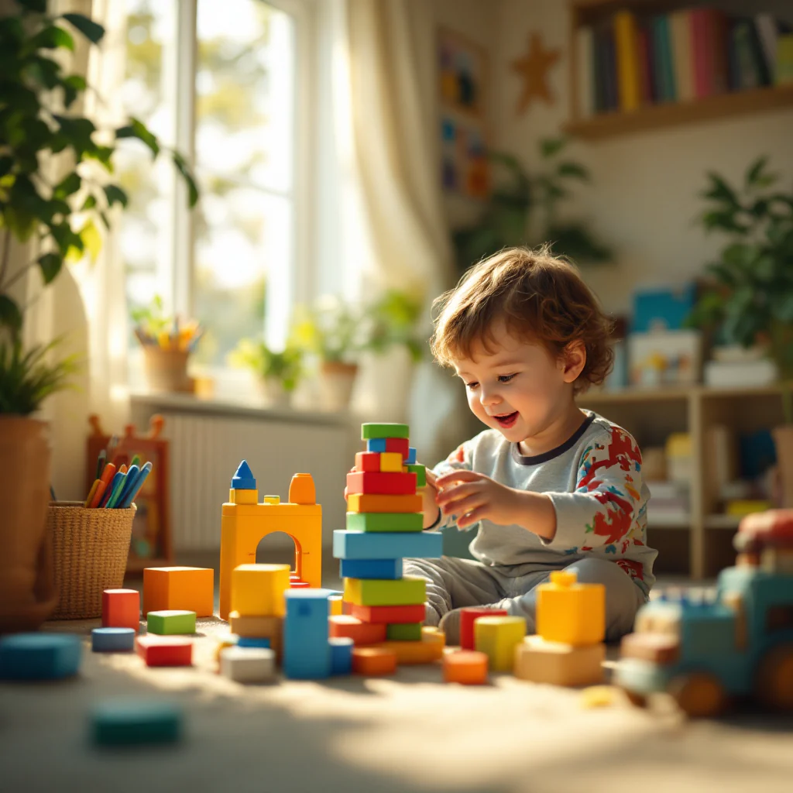

Um hábito de 5 minutos por dia que ajuda crianças atípicas de 6 a 12 anos a nomear emoções, se acalmar com mais facilidade e se conectar de verdade com você.

"E no silêncio da noite, fica aquela pergunta: 'Será que estou fazendo certo?'"
O Ancorar Kids não é "só mais um PDF". São mais de 30 atividades cuidadosamente desenvolvidas com base em práticas validadas pela psicologia infantil, que ensinam a criança neurodivergente — no ritmo dela e do jeito dela — a reconhecer, nomear e expressar emoções. Em poucos minutos por dia, brincando, seu filho constrói a segurança emocional que vai carregar para a vida toda.
Atividades fundamentadas em pesquisas de psicologia e neurociência aplicadas ao desenvolvimento infantil atípico.
Nada de tarefas chatas: são atividades lúdicas que a criança sente como brincadeira, não como obrigação.
Menos crises, mais conversas. A transformação aparece nos pequenos momentos.
Seu filho começa a:
E você começa a:
No Ancorar Kids, seu filho não é rotulado, não é comparado, não é "consertado". Ele é acolhido. As atividades não existem para corrigir quem ele é — existem para ajudá-lo a se entender, se expressar, se aceitar e se fortalecer. Porque toda criança merece o Ancorar Kids. E o seu filho merece o dele.
52 perguntas leves e acolhedoras para puxar conversas que aproximam. Perfeitos para o jantar, o caminho da escola ou a hora de dormir — momentos simples que viram memórias e fortalecem o vínculo e a socialização da criança.
"Minha filha tem autismo e nunca conseguia dizer o que sentia. Com o termômetro das emoções ela começou a apontar o que estava sentindo. As crises diminuíram muito."
"Meu filho tem TDAH e a concentração dele em qualquer coisa era zero. As atividades são curtas e lúdicas, ele pede para fazer todo dia. Nunca vi isso antes."
"Comprei sem muita expectativa e me surpreendi. Em duas semanas meu filho já conseguia dizer 'estou com raiva' em vez de jogar as coisas no chão."
"O material é lindo e muito bem pensado. Minha filha com TEA adora as atividades de colorir enquanto processa as emoções. É realmente diferente de tudo que tentei."
"Já tentei de tudo para ajudar meu filho nas crises. O Ancorar Kids foi o único material que ele topou usar de bom grado. Os 5 minutos por dia fazem diferença real."
"Choramos juntas preenchendo a atividade 'Pessoas em Quem Confio'. Nunca imaginei que minha filha me colocaria como a primeira da lista. Obrigada por esse material."
"Meu filho tem hipersensibilidade sensorial e qualquer coisa virava choro. Depois de um mês com o kit ele já consegue identificar o gatilho antes de explodir."
"Comprei para minha filha de 6 anos e ela fica esperando o momento do dia em que a gente senta juntas para fazer. Criou um ritual lindo entre nós duas."
"A psicopedagoga da escola do meu filho perguntou o que eu tinha feito de diferente. Ele estava se comunicando melhor, pedindo ajuda em vez de surtar. É o Ancorar Kids."
"Vale cada centavo. Gastei muito mais com terapias que não engajavam meu filho. Ele faz as atividades sorrindo e eu vejo a evolução semana a semana."
"Minha filha tem dislexia e processamento auditivo central. O fato de ser visual e colorido fez toda a diferença. Ela entende as atividades sem precisar de ajuda."
"Fiz com meu filho de 11 anos que nunca quis 'papo de sentimento'. Ele achou que era brincadeira. Hoje me conta coisas que nunca imaginou compartilhar."
"O Cantinho da Calma que montamos juntos baseado no material virou o lugar favorito do meu filho em momentos de crise. Ele vai lá sozinho agora."
"Recomendo para toda mãe atípica. A gente se sente tão sozinha nessa jornada. Esse material foi feito com muito cuidado e a diferença na minha filha é visível."
"Meu filho de 7 anos com TDAH impulsivo parou de bater quando fica com raiva. Ele aprendeu a ir ao cantinho e respirar. Eu mal acredito ainda."
"A atividade do Termômetro das Emoções virou rotina aqui em casa. Toda manhã meu filho marca como está se sentindo e a gente já sabe como vai ser o dia."
"Minha filha com TEA nível 1 tem muita dificuldade com mudanças de rotina. As atividades de mentalidade de crescimento ajudaram ela a lidar melhor com imprevistos."
"Simples, acessível e transformador. Três palavras para o Ancorar Kids. Meu filho sorri quando vê o material. Isso já diz tudo."
"Estávamos há meses sem conseguir ter uma conversa tranquila com nossa filha. O Ancorar Kids abriu uma porta que parecia fechada para sempre."
"Imprimimos e montamos uma pasta linda. Minha filha chama de 'o livro dos sentimentos dela'. Ela cuida com tanto carinho. Me emociono só de ver."
"Meu filho tem ansiedade severa e as técnicas de respiração e calma do material foram um divisor de águas. Ele agora consegue se regular sozinho em muitas situações."
"Sou terapeuta ocupacional e recomendo o Ancorar Kids para as famílias que atendo. O material complementa muito bem o trabalho terapêutico em casa."
"Meu filho de 12 anos resistia a qualquer coisa que parecesse 'terapia'. O Ancorar Kids não parece. Parece um diário legal. Ele topou na hora."
"A atividade de autoestima fez minha filha escrever coisas boas sobre ela mesma pela primeira vez. Ela lê toda semana quando está triste. Isso não tem preço."
"Comprei para meu filho com TDAH e acabei fazendo as atividades junto com ele. Aprendi muito sobre ele e sobre mim mesma. Recomendo de coração."
"Minha filha tem sensibilidade emocional extrema, chora por tudo. Com o material ela aprendeu a nomear e validar as emoções. As crises de choro reduziram pela metade."
"O material chegou num momento em que eu estava completamente esgotada. Fazer as atividades com meu filho me reconectou com ele de um jeito que eu não esperava."
"Meu filho autista tem dificuldade com contato visual e conversas diretas. Fazer as atividades no papel foi a forma perfeita de ele se abrir sem pressão."
"Sou pai solo e não sabia como abordar os sentimentos com minha filha. O Ancorar Kids me deu o caminho. Agora temos uma conversa boa todo dia."
"A terapeuta da minha filha ficou impressionada com o vocabulário emocional que ela desenvolveu em poucas semanas. O Ancorar Kids foi a única novidade que introduzimos."
"Meu filho tem TOC e ansiedade. O Pote de Autoestima dele está cheio de papéis com coisas boas que ele mesmo escreveu. Nos dias ruins ele abre e lê. Funciona."
"Nunca um material foi tão bem aceito pela minha filha com TEA. Ela é muito resistente a novidades, mas o Ancorar Kids ela pediu para fazer no mesmo dia."
"Os Cards de Conexão do bônus são incríveis. No jantar colocamos um card na mesa e a conversa flui naturalmente. Meu filho fala coisas que nunca imaginei ouvir."
"Imprimi duas vezes porque minha filha preencheu tudo e quis começar de novo. Diz que é o livro favorito dela. Meu coração não cabe de alegria."
"Meu filho tem dificuldade de socialização e as atividades sobre confiança e vínculos ajudaram muito nas conversas com ele sobre amizades. Resultado visível na escola."
"Sou psicóloga e fiquei impressionada com a qualidade técnica do material. É baseado em evidências e apresentado de forma acessível. Recomendo para todas as famílias."
"A minha filha com TDA tem muita dificuldade de reconhecer quando está no limite. O termômetro das emoções foi exatamente o que faltava para ela visualizar isso."
"Comprei com um pouco de desconfiança porque já tentei muito coisa. Mas o Ancorar Kids é diferente. É simples do jeito certo. Meu filho de 6 anos ama."
"A Árvore da Gratidão virou tradição de domingo aqui. Toda semana meu filho escreve uma coisa nova. Ele está mais positivo e menos focado no que dá errado."
"Meu filho tem síndrome de Asperger e muita dificuldade de empatia. As atividades sobre sentimentos ajudaram ele a entender como os outros se sentem também."
"Estava tão cansada de me sentir impotente diante das crises do meu filho. O Ancorar Kids me deu ferramentas concretas. Hoje eu sei o que fazer."
"Minha filha de 12 anos disse que o Ancorar Kids a ajuda a entender por que fica tão nervosa às vezes. Para uma pré-adolescente neurodivergente isso é enorme."
"Usamos o material em grupo terapêutico com crianças autistas. O engajamento foi incrível. As crianças queriam levar as páginas para casa para mostrar para os pais."
"Meu filho não gosta de escrever por causa da dislexia. Mas como tem muito desenho e cores no Ancorar Kids, ele participa sem reclamar. Foi a solução que faltava."
"Três semanas usando e minha filha já consegue dizer 'estou com a emoção vermelha' quando vai entrar em colapso. Isso nos dá tempo de agir antes da crise."
"Meu filho autista tem rituais rígidos. Conseguimos inserir o Ancorar Kids na rotina dele de forma natural. Hoje é ele quem lembra que é hora de fazer."
"Valeu muito mais do que o preço. Minha filha passou a pedir desculpas depois de uma crise pela primeira vez. Ela disse 'eu estava com a emoção vermelha, mãe'."
"O Ancorar Kids chegou na semana mais difícil da nossa jornada. Deu esperança quando eu precisava. E resultado de verdade quando eu precisava mais ainda."
"Compartilhei com o grupo de mães atípicas que participo e em dois dias mais de 20 mães compraram. Todas voltaram para agradecer. Material transformador."
"Meu filho com TDAH e TEA tinha dificuldade enorme em iniciar qualquer atividade. O formato do Ancorar Kids, curto e visual, foi perfeito para o perfil dele."
"A cada semana minha filha evolui um pouco. Não é milagre, é consistência. O Ancorar Kids nos deu a estrutura para isso. Gratidão enorme."
Tudo isso deveria custar mais de R$297,00. Mas hoje, nesta oferta especial,
seu investimento é de apenas:
6x de R$8,99
ou R$47,90 à vista
QUERO O ANCORAR KIDS Pagamento 100% seguro • Acesso imediato após a confirmaçãoAplique as atividades com seu filho por 7 dias. Se por qualquer motivo você sentir que o material não trouxe nenhum benefício, basta enviar uma mensagem e devolvemos 100% do seu dinheiro. Sem perguntas, sem burocracia.